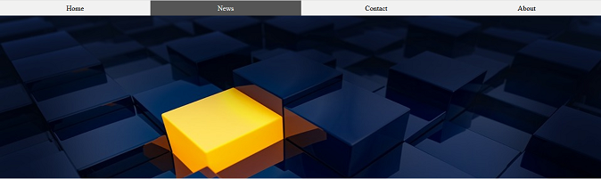

Cómo utilizar Martindipity.css Framework
Primer paso
Descargue la última versión del Framework y abra su contenido.
Encontrará varios archivos, los cuales utilizará como base de trabajo para su landing page.
- CSS - Carpeta contenedora del Framework
- IMG - Carpeta contenedora de las imágenes utilizadas
- index.html - Fichero base para nuestro proyecto
- instrucciones.html - Fichero de ayuda
Segundo paso
Abra en cualquier editor de textos o de código (Bloc de notas, Sublime text...) los archivos:
- index.html
- martindipity.css (situado dentro de la carpeta "css")
Ejecute index.html en cualquier navegador para ver los cambios según trabaje.
Ya podrá realizar las modificaciones que el framework permite
Tercer paso
Elija entre 2 tipos de configuraciones, tanto para Cabecera como para imágenes, contenido o footer. Sólo tendrá que cambiar el código de la etiqueta y combinar las configuraciones como más le guste
Le bastará con cambiar entre la opción a y b de los parámetros principales:

Si utiliza la opción "a" el resultado será el siguiente:
- Cabecera:

- Imágenes:
- Contenido:

- Footer:
Si utiliza la opción "b" el resultado será el siguiente:
- Cabecera: 
- Imágenes:

- Contenido:
- Footer:

Grid Technology
Gracias a esta herramienta puedes Tener una rejilla en la que cuadrar a la perfección tus diseños web. Solo necesitas añadir a la etiqueta body de tu web la clase grid (class="grid"), y ya podrás hacer uso de ella.
Los cuadros que se muestran en el fondo de la web tienen tres diferentes tamaños.
- Cuadro azul: 100x100 px
- Cuadro verde: 50x50 px
- Cuadro rosa: 25x25 px
Conclusiones
Gracias a esta herramienta puedes tener configurada en cuestión de segundos 56 combinaciones distintas de landing page gracias a las dos opciones ("a" o "b") que ponemos en tu mano. Próximamente el rango de opciones de configuración se ampliará, así que te recomiendo que estés atento a las redes sociales de martindipity donde se realizarán los anuncios de lanzamiento.